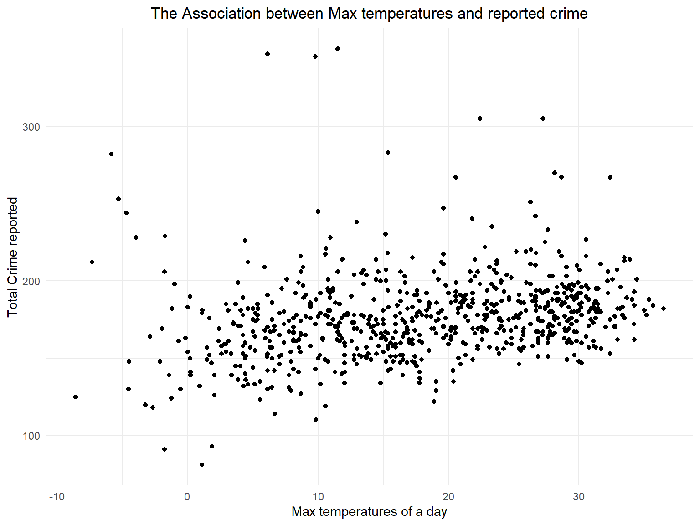

Based on some publicly available information, we knew that weather affect crime rate. For example, the hotter the weather is, the more likely people are to commit crimes. The worse the weather is, the less likely people are to go out and commit crimes. Here we want to predict number of crimes each day in New York as our outcome. And the precipitation, snow depth, maximum temperature and minimum temperature can be considered as predictors.
First, let’s check the distribution of number of crime cases each day in New York.
ggplot(data = crime_weather,aes(x = total_crime)) + geom_histogram()+
labs(title = "The distribution of daily cases",
y = "Counts",
x = "Number of crimes per day")+
theme(plot.title = element_text(hjust = 0.5))From the distribution of daily cases, we noticed that it is approximately normally distributed, therefore we don’t need to transform the value of the outcome.
Then, we use scatter plot to investigate the association between weather and cases/crime.
ggplot(crime_weather, aes(x = mean_tmax, y = total_crime)) + geom_point()+ labs(title = "The Association between Max temperatures and reported crime",
y = "Total Crime reported",
x = "Max temperatures of a day")+
theme(plot.title = element_text(hjust = 0.5))
ggplot(crime_weather, aes(x = mean_tmin, y = total_crime)) + geom_point()+ labs(title = "The Association between Min temperatures and reported crime",
y = "Total Crime reported",
x = "Min temperatures of a day")+
theme(plot.title = element_text(hjust = 0.5))ggplot(crime_weather, aes(x = mean_prcp, y = total_crime)) + geom_point()+ labs(title = "The Association between precipitation and reported crime",
y = "Total Crime reported",
x = "Precipitation(tenths of mm)")+
theme(plot.title = element_text(hjust = 0.5))ggplot(crime_weather, aes(x = mean_snow, y = total_crime)) + geom_point()+ labs(title = "The Association between snowfall and reported crime",
y = "Total Crime reported",
x = "Snow depth(mm)")+
theme(plot.title = element_text(hjust = 0.5))From the plots, we noticed that all of the four predictors may have association with the number of cases of crime in New York, So I proposed the following models. We also want to investigate whether the month and day of week can be predictors.
Firstly, I use month, weekdays and all weather data as predictors
full_model = lm(total_crime ~ month + day_of_week + mean_tmin + mean_tmax + mean_prcp + mean_snow, data = crime_weather)
summary(full_model) %>%
broom::tidy() %>%
knitr::kable(digits = 2)| term | estimate | std.error | statistic | p.value |
|---|---|---|---|---|
| (Intercept) | 184.26 | 4.59 | 40.12 | 0.00 |
| month2 | -16.48 | 4.56 | -3.62 | 0.00 |
| month3 | -12.26 | 4.54 | -2.70 | 0.01 |
| month4 | -8.69 | 4.95 | -1.76 | 0.08 |
| month5 | -3.77 | 5.33 | -0.71 | 0.48 |
| month6 | -6.89 | 6.13 | -1.12 | 0.26 |
| month7 | -8.76 | 6.66 | -1.31 | 0.19 |
| month8 | -7.80 | 6.59 | -1.18 | 0.24 |
| month9 | -4.40 | 6.11 | -0.72 | 0.47 |
| month10 | 0.89 | 5.34 | 0.17 | 0.87 |
| month11 | -0.78 | 4.71 | -0.17 | 0.87 |
| month12 | 14.51 | 4.47 | 3.24 | 0.00 |
| day_of_weekMonday | -24.58 | 3.35 | -7.33 | 0.00 |
| day_of_weekSaturday | -17.01 | 3.34 | -5.09 | 0.00 |
| day_of_weekSunday | -25.66 | 3.34 | -7.67 | 0.00 |
| day_of_weekThursday | -14.85 | 3.36 | -4.43 | 0.00 |
| day_of_weekTuesday | -16.45 | 3.36 | -4.90 | 0.00 |
| day_of_weekWednesday | -8.54 | 3.36 | -2.54 | 0.01 |
| mean_tmin | 0.03 | 0.42 | 0.06 | 0.95 |
| mean_tmax | 0.77 | 0.35 | 2.18 | 0.03 |
| mean_prcp | -0.05 | 0.01 | -4.29 | 0.00 |
| mean_snow | -0.08 | 0.02 | -3.55 | 0.00 |
I noticed that both tmax and tmin are not significant, which may be attributed to their correlation, so I calculated the VIF.
vif(full_model) %>%
knitr::kable()| GVIF | Df | GVIF^(1/(2*Df)) | |
|---|---|---|---|
| month | 6.31 | 11 | 1.09 |
| day_of_week | 1.05 | 6 | 1.00 |
| mean_tmin | 18.24 | 1 | 4.27 |
| mean_tmax | 14.84 | 1 | 3.85 |
| mean_prcp | 1.08 | 1 | 1.04 |
| mean_snow | 1.15 | 1 | 1.07 |
It is obvious that the VIF of tmin and tmax is high, so I chose to drop tmin. Besides, I found that some months are not significantly different from the reference category. So, what if we drop the month?
The second proposed model is total_crime ~ day_of_week + mean_tmax + mean_prcp + mean_snow
model1 = lm(total_crime ~ day_of_week + mean_tmax + mean_prcp + mean_snow, data = crime_weather)
summary(model1) %>%
broom::tidy() %>%
knitr::kable(digits = 2)| term | estimate | std.error | statistic | p.value |
|---|---|---|---|---|
| (Intercept) | 183.55 | 3.04 | 60.31 | 0.00 |
| day_of_weekMonday | -24.79 | 3.47 | -7.14 | 0.00 |
| day_of_weekSaturday | -17.05 | 3.46 | -4.93 | 0.00 |
| day_of_weekSunday | -25.61 | 3.47 | -7.39 | 0.00 |
| day_of_weekThursday | -14.98 | 3.48 | -4.31 | 0.00 |
| day_of_weekTuesday | -16.60 | 3.47 | -4.78 | 0.00 |
| day_of_weekWednesday | -8.71 | 3.48 | -2.50 | 0.01 |
| mean_tmax | 0.59 | 0.10 | 6.00 | 0.00 |
| mean_prcp | -0.05 | 0.01 | -4.40 | 0.00 |
| mean_snow | -0.09 | 0.02 | -3.89 | 0.00 |
This time, the tmax becomes significant. And it has a positive effect on crime rate, which validate our assumption. Besides, all other variables are significant.
But we noticed that some months are significantly different from reference catergory, so we want to compare model1 and model with month.
model2 = lm(total_crime ~ month +day_of_week + mean_tmax + mean_prcp + mean_snow, data = crime_weather)
summary(model2) %>%
broom::tidy() %>%
knitr::kable(digits = 2)| term | estimate | std.error | statistic | p.value |
|---|---|---|---|---|
| (Intercept) | 184.14 | 4.14 | 44.47 | 0.00 |
| month2 | -16.51 | 4.53 | -3.64 | 0.00 |
| month3 | -12.28 | 4.52 | -2.72 | 0.01 |
| month4 | -8.68 | 4.94 | -1.76 | 0.08 |
| month5 | -3.71 | 5.24 | -0.71 | 0.48 |
| month6 | -6.80 | 5.94 | -1.14 | 0.25 |
| month7 | -8.62 | 6.30 | -1.37 | 0.17 |
| month8 | -7.66 | 6.18 | -1.24 | 0.22 |
| month9 | -4.28 | 5.82 | -0.74 | 0.46 |
| month10 | 0.95 | 5.23 | 0.18 | 0.86 |
| month11 | -0.77 | 4.70 | -0.16 | 0.87 |
| month12 | 14.51 | 4.47 | 3.25 | 0.00 |
| day_of_weekMonday | -24.59 | 3.35 | -7.35 | 0.00 |
| day_of_weekSaturday | -17.01 | 3.34 | -5.09 | 0.00 |
| day_of_weekSunday | -25.66 | 3.34 | -7.68 | 0.00 |
| day_of_weekThursday | -14.85 | 3.35 | -4.43 | 0.00 |
| day_of_weekTuesday | -16.43 | 3.35 | -4.91 | 0.00 |
| day_of_weekWednesday | -8.54 | 3.36 | -2.54 | 0.01 |
| mean_tmax | 0.79 | 0.19 | 4.15 | 0.00 |
| mean_prcp | -0.05 | 0.01 | -4.37 | 0.00 |
| mean_snow | -0.08 | 0.02 | -3.57 | 0.00 |
anova(model1, model2)## Analysis of Variance Table
##
## Model 1: total_crime ~ day_of_week + mean_tmax + mean_prcp + mean_snow
## Model 2: total_crime ~ month + day_of_week + mean_tmax + mean_prcp + mean_snow
## Res.Df RSS Df Sum of Sq F Pr(>F)
## 1 721 453378
## 2 710 414710 11 38669 6.02 1.9e-09 ***
## ---
## Signif. codes: 0 '***' 0.001 '**' 0.01 '*' 0.05 '.' 0.1 ' ' 1We use ANOVA to compare the two models. Since p-value is smaller than 0.05, we should include month in our model.
We also want to try to include a interaction term in our model.
model3 <- lm(total_crime ~ month +day_of_week + mean_tmax + mean_prcp + mean_snow + mean_tmax*day_of_week, data = crime_weather )
summary(model3) %>%
broom::tidy() %>%
knitr::kable(digits = 2)| term | estimate | std.error | statistic | p.value |
|---|---|---|---|---|
| (Intercept) | 191.12 | 5.59 | 34.20 | 0.00 |
| month2 | -16.88 | 4.53 | -3.73 | 0.00 |
| month3 | -12.64 | 4.52 | -2.80 | 0.01 |
| month4 | -9.17 | 4.94 | -1.86 | 0.06 |
| month5 | -4.30 | 5.24 | -0.82 | 0.41 |
| month6 | -7.55 | 5.95 | -1.27 | 0.20 |
| month7 | -9.48 | 6.30 | -1.50 | 0.13 |
| month8 | -8.45 | 6.19 | -1.37 | 0.17 |
| month9 | -4.96 | 5.83 | -0.85 | 0.39 |
| month10 | 0.36 | 5.23 | 0.07 | 0.94 |
| month11 | -1.06 | 4.70 | -0.23 | 0.82 |
| month12 | 14.02 | 4.47 | 3.14 | 0.00 |
| day_of_weekMonday | -36.77 | 6.94 | -5.30 | 0.00 |
| day_of_weekSaturday | -25.17 | 6.57 | -3.83 | 0.00 |
| day_of_weekSunday | -29.43 | 6.75 | -4.36 | 0.00 |
| day_of_weekThursday | -27.26 | 6.97 | -3.91 | 0.00 |
| day_of_weekTuesday | -27.93 | 6.95 | -4.02 | 0.00 |
| day_of_weekWednesday | -9.17 | 7.14 | -1.28 | 0.20 |
| mean_tmax | 0.42 | 0.28 | 1.50 | 0.13 |
| mean_prcp | -0.05 | 0.01 | -4.22 | 0.00 |
| mean_snow | -0.08 | 0.02 | -3.59 | 0.00 |
| day_of_weekMonday:mean_tmax | 0.69 | 0.34 | 2.01 | 0.05 |
| day_of_weekSaturday:mean_tmax | 0.47 | 0.33 | 1.43 | 0.15 |
| day_of_weekSunday:mean_tmax | 0.21 | 0.33 | 0.64 | 0.52 |
| day_of_weekThursday:mean_tmax | 0.69 | 0.34 | 2.04 | 0.04 |
| day_of_weekTuesday:mean_tmax | 0.65 | 0.34 | 1.89 | 0.06 |
| day_of_weekWednesday:mean_tmax | 0.06 | 0.34 | 0.17 | 0.86 |
In model 3 , we assume that there is an interaction between temperature and day of week. However, some of the interaction term are not significant.
We also want to know whether to include months and weekdays in our model.
model4 <- lm(total_crime ~ mean_tmax + mean_prcp + mean_snow, data = crime_weather)
summary(model4) %>%
broom::tidy() %>%
knitr::kable(digits = 2)| term | estimate | std.error | statistic | p.value |
|---|---|---|---|---|
| (Intercept) | 168.17 | 2.15 | 78.15 | 0 |
| mean_tmax | 0.59 | 0.10 | 5.76 | 0 |
| mean_prcp | -0.05 | 0.01 | -4.31 | 0 |
| mean_snow | -0.09 | 0.02 | -4.05 | 0 |
We want to decide which model is the best to predict the daily number of crime cases in New York. We use cross validation to compare the models.
cv_df <-
crossv_mc(crime_weather, 100) %>%
mutate(
train = map(train, as_tibble),
test = map(test, as_tibble)
)cv_df <-
cv_df %>%
mutate(
model1 = map( train, ~lm(total_crime ~ month + day_of_week + mean_tmax + mean_prcp + mean_snow, data = crime_weather)),
model2 = map( train, ~lm(total_crime ~ day_of_week + mean_tmax + mean_prcp+mean_snow, data = crime_weather)),
model3 = map( train, ~lm(total_crime ~ month +day_of_week + mean_tmax + mean_prcp + mean_snow +mean_tmax*day_of_week, data = crime_weather)),
model4 = map( train, ~lm( total_crime ~ mean_tmax + mean_prcp + mean_snow, data = crime_weather))) %>%
mutate(
rmse_model1 = map2_dbl( model1, test, ~rmse(model = .x, data =.y)),
rmse_model2 = map2_dbl( model2, test, ~rmse(model = .x, data =.y)),
rmse_model3 = map2_dbl( model3, test, ~rmse(model = .x, data =.y)),
rmse_model4 = map2_dbl( model4, test, ~rmse(model = .x, data =.y))
) cv_df %>%
select(starts_with("rmse")) %>%
pivot_longer(
everything(),
names_to = "model",
values_to = "rmse",
names_prefix = "rmse_") %>%
mutate(model = fct_inorder(model)) %>%
ggplot(aes(x = model, y = rmse)) + geom_violin()cv_df %>%
summarize(
rmse_1 = mean(rmse_model1),
rmse_2 = mean(rmse_model2),
rmse_3 = mean(rmse_model3),
rmse_4 = mean(rmse_model4)
) %>%
knitr::kable()| rmse_1 | rmse_2 | rmse_3 | rmse_4 |
|---|---|---|---|
| 24.1 | 25.2 | 24 | 26.6 |
par(mfrow = c(2,2))
plot(model3)Model3’s root means square error is the smallest in the four models, which may indicates it is the best model in the four models.
We then did a model diagnostic to check if the model assumptions. Although there are some outliers as shown in the plots, the Q-Q plot, residuals VS fitted plot and Scale-Location plot indicates the residuals are normally distributed and variance of residuals is constant. Therefore, model3 could be useful for predicting the total number of crime cases each day in New York, which means month, day of week, temperature, precipitation , snow depth and a interaction term between day of week and temperature are all useful predictors if we want to predict the number of crime cases on a specific day in New York.